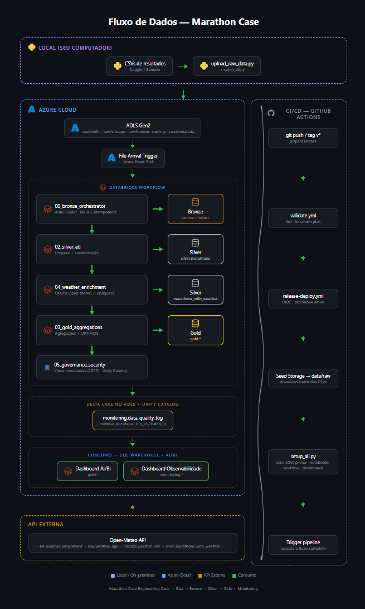

Tecnologias Utilizadas
Azure
Terraform
GitHub Actions
Python / PySpark
Apache Spark
Delta Lake
Databricks Workflows
Unity Catalog
Visão Geral da Arquitetura
flowchart LR
subgraph Fontes["Fontes de Dados"]
A[CSVs de Resultados
Berlin / Chicago / London / NYC] B[CSV de Metadados] C[Open-Meteo API] end subgraph Azure["Azure Cloud"] D[ADLS Gen2
raw/berlin/
raw/chicago/
raw/london/
raw/nyc/
raw/metadata/] E[EventGrid] end subgraph Databricks["Databricks"] F["File Arrival Trigger"] G["Workflow"] H["Auto Loader
cloudFiles"] I[(Bronze Delta)] J[(Silver Delta)] K[(Gold Delta)] L["AI/BI Dashboard"] end A -->|upload_raw_data.py| D B -->|upload_raw_data.py| D D -->|novo arquivo| E E --> F F --> G G --> H H --> I I --> J J --> K C -->|weather_enrichment| J K --> L
Berlin / Chicago / London / NYC] B[CSV de Metadados] C[Open-Meteo API] end subgraph Azure["Azure Cloud"] D[ADLS Gen2
raw/berlin/
raw/chicago/
raw/london/
raw/nyc/
raw/metadata/] E[EventGrid] end subgraph Databricks["Databricks"] F["File Arrival Trigger"] G["Workflow"] H["Auto Loader
cloudFiles"] I[(Bronze Delta)] J[(Silver Delta)] K[(Gold Delta)] L["AI/BI Dashboard"] end A -->|upload_raw_data.py| D B -->|upload_raw_data.py| D D -->|novo arquivo| E E --> F F --> G G --> H H --> I I --> J J --> K C -->|weather_enrichment| J K --> L
Fluxo Completo
Diagrama visual com Local, Azure Cloud, API Externa e CI/CD. Para a versão interativa (com ícones e hover), abra docs/fluxo.html no navegador.

Camadas Medalhão
Raw (Landing)
- Armazenamento em
abfss://marathon-data@<storage>.dfs.core.windows.net/raw/ - Subpastas por fonte:
raw/berlin/,raw/chicago/,raw/london/,raw/nyc/,raw/metadata/ - Sem transformação; formato original dos CSVs
- JSONs brutos da API Open-Meteo em
raw/weather_api/
Bronze
- Ingestão via Databricks Auto Loader (
cloudFiles) — uma stream por subpasta - Checkpoint e schema inferido por fonte
- Deduplicação por
row_hash+source+yearvia DeltaMERGE - Tabelas externas:
bronze.berlin,bronze.chicago,bronze.london,bronze.nyc
Silver
- Normalização de schema, padronização de nomes e tipos
- Integração das quatro fontes em
silver.marathons - Tabela
silver.marathons_piimantém dados pessoais; viewsmarathons_pii_public(mascarada) emarathons_pii_admin(full) controlam o acesso - Mascaramento de dados sensíveis (nomes e identificadores via SHA-256) — orientação LGPD
OPTIMIZE+ZORDERnas tabelas Silver- Validação de qualidade e registro em
monitoring.data_quality_log
Gold
- Agregações prontas para análise e dashboard
- Tabelas:
gold.kpi_summary,gold.top_countries,gold.weather_impact,gold.athletes_by_country, etc. - Enriquecimento climático via Open-Meteo em
gold.weather_impact - Otimização física com
OPTIMIZE+ZORDERpara leitura eficiente
Fluxo de Ingestão Event-Driven
Novo CSV em
raw/<fonte>/
→
EventGrid detecta
→
File Arrival Trigger
→
Workflow Databricks
→
Auto Loader micro-batch
→
Delta MERGE
O Auto Loader processa apenas arquivos ainda não vistos (checkpoint), enquanto o MERGE do Delta Lake garante idempotência: reexecutar o pipeline não gera duplicatas.
Pipeline Completo
flowchart TB
subgraph Bronze["Bronze"]
B1[Auto Loader berlin]
B2[Auto Loader chicago]
B3[Auto Loader london]
B4[Auto Loader nyc]
end
subgraph Silver["Silver"]
S1[silver.marathons]
S2[bronze.marathon_metadata]
S3[bronze.weather_raw]
S4[silver.marathons_with_weather]
end
subgraph Gold["Gold"]
G1[kpi_summary]
G2[top_countries]
G3[weather_impact]
G4[age_gender_profile]
G5[marathon_comparison]
end
B1 --> S1
B2 --> S1
B3 --> S1
B4 --> S1
S2 --> S4
S3 --> S4
S1 --> S4
S1 --> G1
S1 --> G2
S1 --> G4
S4 --> G3
G1 --> GOV[05_governance_security]
G2 --> GOV
G3 --> GOV
G4 --> GOV
G5 --> GOV
GOV --> DASH[AI/BI Dashboard]
G1 --> DASH
G2 --> DASH
G3 --> DASH
G4 --> DASH
G5 --> DASH
Governança e Segurança
| Aspecto | Implementação |
|---|---|
| Catálogo | Unity Catalog (marathon / marathon_prod) |
| Acesso ao ADLS | Azure Access Connector + Managed Identity + RBAC |
| Autenticação local | az login (Microsoft Entra ID) |
| Autenticação CI | GitHub OIDC federado → Azure |
| Segredos | Nenhuma chave estática; Databricks secrets guardam apenas configuração |
| LGPD | Hash SHA-256 de nomes/identificadores na Silver + views marathons_pii_public/marathons_pii_admin sobre silver.marathons_pii |
| Observabilidade | monitoring.data_quality_log com row counts, % nulos, schema drift e tempo de execução; dashboard AI/BI separado |
| Lineage | Capturado automaticamente pelo Unity Catalog |
| Escalabilidade / Custo | Job cluster single-node Standard_DS3_v2 para o case; autoscaling configurável via create_databricks_workflow.py. OPTIMIZE + ZORDER nas tabelas Delta. SQL Warehouse com auto-stop de 1 minuto; CI desliga o warehouse após execução. |
Repositório e Deploy
O deploy é feito em um comando:
python scripts/setup_all.pyPara CI/CD, o workflow .github/workflows/release-deploy.yml provisiona a infraestrutura, sobe os dados, implanta notebooks, cria o workflow e publica o dashboard.